ATMOS — Free-Flying Spacecraft Testbed
Repository, simulation, motion tracking, IoT instrumentation and hardware-validation support for an autonomous spacecraft research platform.
ROS 2GazeboPX4OptiTrackHardware
View project ↗
Projects are presented as engineering systems: what problem they solve, how they are architected, what I personally contributed, and what evidence exists. Research projects may also appear on the Research page, but here the emphasis is the system itself.
Repository, simulation, motion tracking, IoT instrumentation and hardware-validation support for an autonomous spacecraft research platform.
High-fidelity swarm simulator coupling multi-UAV dynamics, radio feasibility, topology, packet progression and fault recovery.

Dockerized ROS 2 stack for IMU acquisition, orientation fusion, RealSense depth sensing and remote visualization.
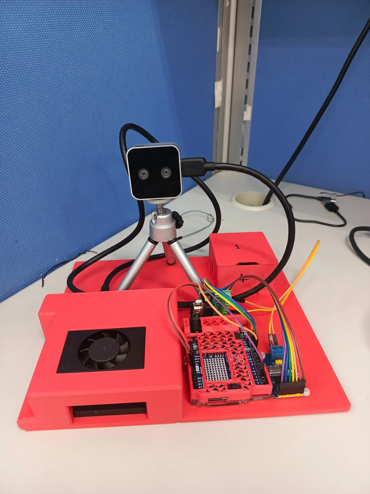
Multi-sensor descent payload integrating IMU, GPS and multi-Pitot sensing with CFD, wind-tunnel calibration and post-flight reconstruction.

Rocket payload / telemetry integration and flight-data support for the 10k COTS category.

Automated conversion of Copernicus imagery into air corridors, a 3-D city and ROS 2/Gazebo multi-UAV missions.

Conceptual UTM framework covering remote ID, geofencing, strategic deconfliction and acceptance tests; presented to the Colombian Air Force.

Propulsion matching, electrical architecture and mission-readiness work for a medical-supply fixed-wing UAS.

Conceptual 28 VDC architecture and high-throughput spraying subsystem sized from hydraulic, electrical and mission constraints.

Canard glider, nozzle/combustion rig, Pilatus PC-12 ECS mock-up, high-lift wing testing and high-speed ANSYS CFD studies.

Autonomous EV3 competition robot with modular mechanisms, line following and repeatable mission sequencing.
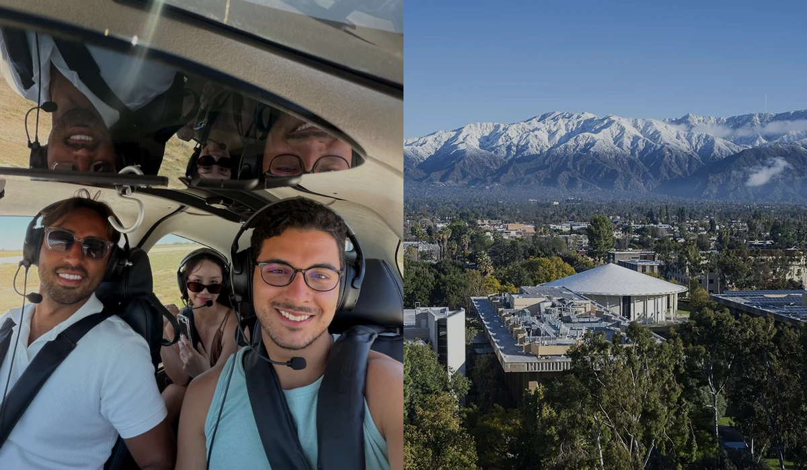
A free-flying spacecraft testbed used to move autonomy research from software and simulation toward repeatable physical experiments.
ATMOS is a modular spacecraft-like laboratory platform designed for ground validation of autonomous space systems. The testbed combines actuation, onboard computing, sensing, communication and external motion tracking to evaluate algorithms before higher-cost deployment environments.
Supported repository-level integration and experiment bring-up, ROS 2/Gazebo/PX4 simulation, motion-capture interfaces, IoT instrumentation and hardware-validation workflows.
The same autonomy stack must be observable in simulation and on hardware. That requires consistent frames, timestamps, telemetry contracts, actuation interfaces and experiment logging — not only a visually similar model.


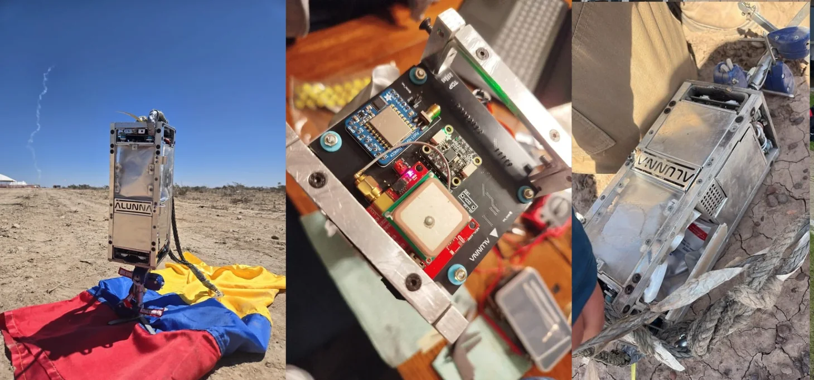
A research framework where communication quality changes what the swarm is allowed to do, rather than being plotted only after the flight simulation.

Mission Control defines worlds, UAVs, service endpoints, topology modes, communication assumptions and controlled fault scenarios.
Isaac Sim plus PX4/Pegasus provides 3-D mobility, physics and autopilot-aware dynamics so that link geometry evolves with the vehicle state.
Sionna evaluates path loss, SNR, capacity and delay; a link-feasibility gate determines whether packets may advance on a hop.
Failures remove nodes from the active graph. The framework recomputes viable service paths, can promote standby UAVs, and logs outage / recovery events.


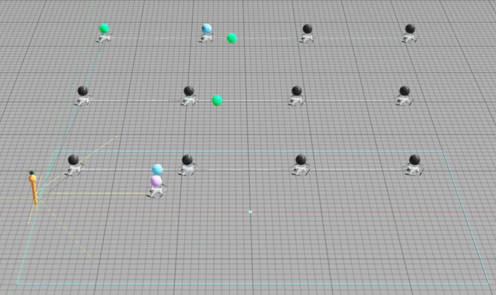

ESP32-based inertial / pressure sensing and an Intel RealSense D405 feed an NVIDIA Jetson running a Dockerized ROS 2 stack. The system publishes standardized messages, estimates orientation, provides TF frames, streams depth / point-cloud data, logs experiments and supports remote visualization on a separate workstation.

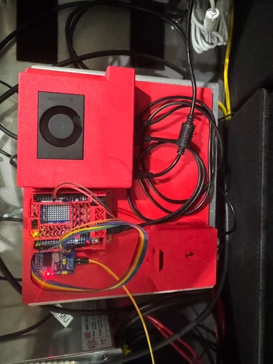
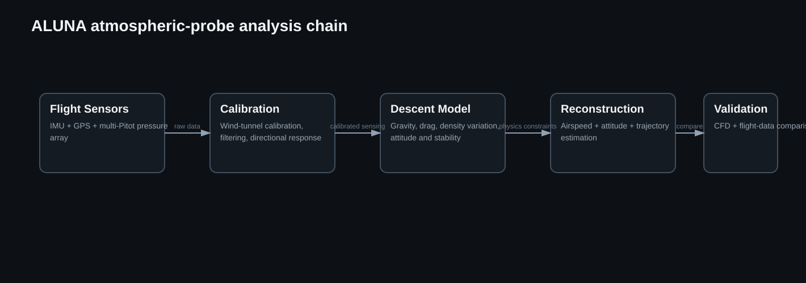
CubeSat-class descent payload integrating IMU, GPS and a multi-Pitot array to reconstruct attitude, velocity and trajectory. CFD and wind-tunnel experiments were used to calibrate the sensing geometry and interpret aerodynamic interference before flight.
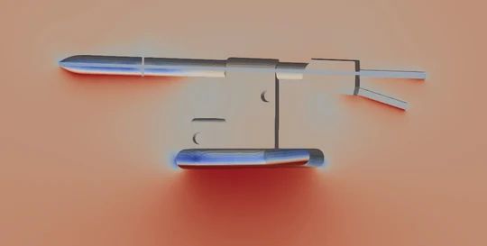
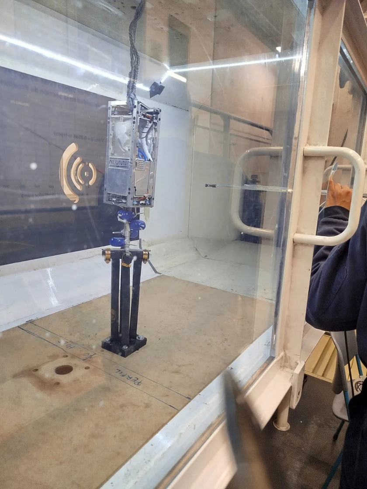
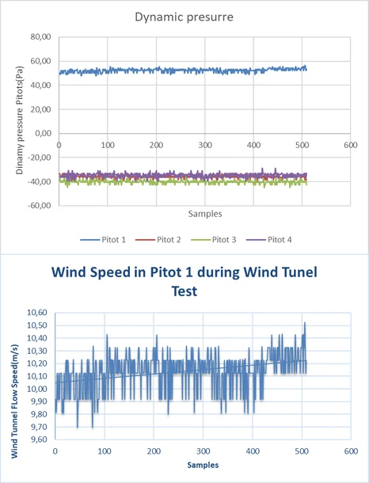

Supported payload–airframe integration, sensor / telemetry interfaces, flight-data acquisition, recovery and post-flight analysis for the Spaceport America Cup 2025 10k COTS mission.
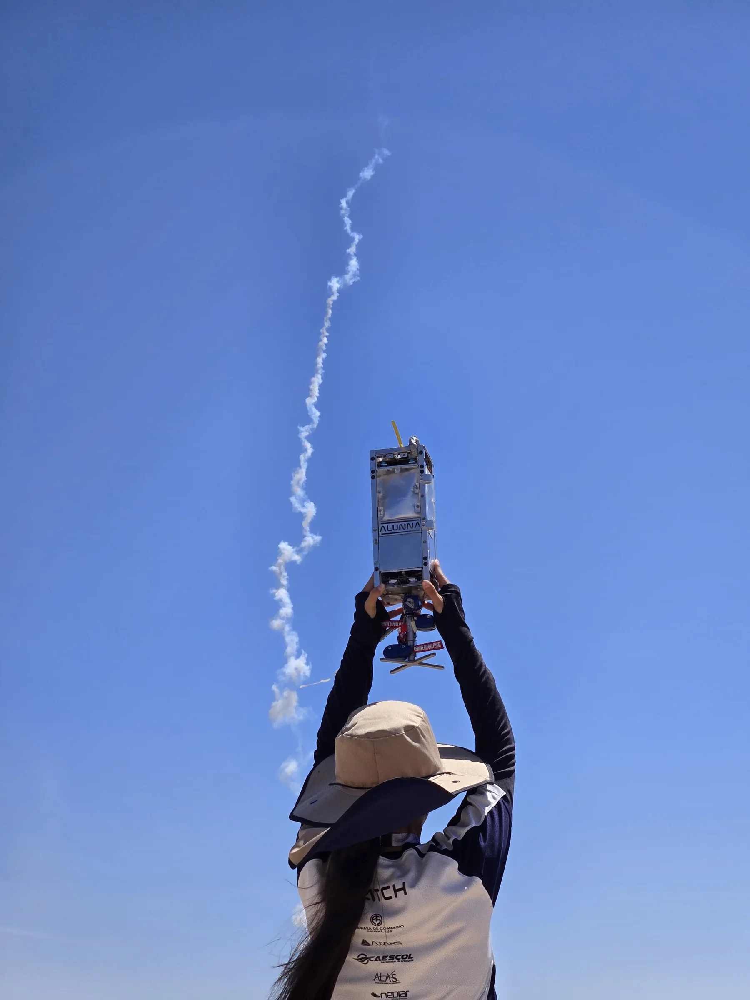


A spatially registered pipeline that converts Copernicus imagery into occupied/free cells and candidate air corridors, creates a graph-based route representation, reconstructs the corresponding city in Blender, and exports the environment into ROS 2/Gazebo for multi-UAV experiments.

Co-authored an urban UTM framework centered on remote identification, geofencing, strategic deconfliction and scenario-based acceptance tests. The proposal treated traffic management as a system-of-systems problem: vehicles must be identifiable, routes must respect airspace constraints, conflicts should be resolved before execution, and the complete concept should be testable against explicit acceptance criteria.
Lead contributor to the functional architecture and acceptance-test framing; participated in presenting the proposal to the Colombian Air Force.
The 2022 DBF challenge required a fixed-wing aircraft to execute medical-supply missions under tight staging and payload constraints. I led propeller–motor–battery matching and the electrical architecture while payload configuration and weight / balance changed across mission modes.
Propeller and battery selection combined motor curves, disk loading, climb margin, takeoff constraints and electrical current limits.
Defined the power budget for ESC, receiver, servos and avionics, plus wiring / connector standards and quick-turn battery handling for short staging windows.


Conceptual design of a high-throughput agricultural aircraft subsystem combining a redundant 28 VDC architecture with a hydraulically demanding spray system. The design had to meet application-rate, generator, battery, voltage-drop and field-throughput constraints simultaneously.


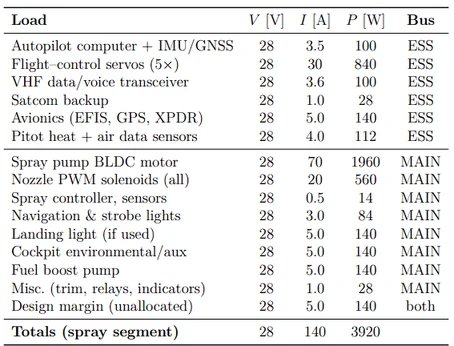
Team-lead design of a non-powered <1 kg glider with 1.8 m span, balsa/composite construction, CG / dihedral optimization and hand-launch testing.
Didactic convergent–divergent nozzle / combustion experiment with LM35 temperature sensing, MQ gas detection, humidity sensing, Arduino-based DAQ and safety interlocks. Demonstrated controlled cold-flow and hot-fire operation in the laboratory.
Scaled mechatronic mock-up of the air-conditioning / distribution concept using an Arduino Mega, actuated dampers, visible cooling-flow demonstration and panel switches.
Wind-tunnel study of flap, slat and spoiler deflections with Arduino-driven actuation, multi-point force measurement and repeatable angle-of-attack setting to characterize lift / drag trends and stall behavior.
ANSYS-based aerodynamic simulations used to evaluate pressure / flow behavior around airfoil sections at elevated speeds and compare design trends across configurations.


Designed and built an autonomous LEGO EV3 competition robot with rigid modular attachments, gearing and sensor-based line following. Mission sequences were organized as repeatable state-machine-like routines with attention to fixture alignment, battery consistency and quick-swap tools.